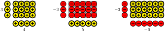
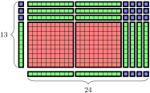
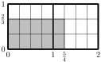
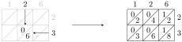

Understand multiplication as \(A\) groups of \(B\text{.}\)
Understand multiplication as areas.
Understand multiplication with negatives as creating "opposite" groups.
In this book, we’ve already seen two different concepts for multiplication. When we were working with the distributive property (Definition 3.4), we talked about multiplication representing groups of things and used this example:
We also talked about multiplication being represented as an area (Section 7.1):
In this section, we’re going to explore these multiplication concepts more deeply in order to understand how they relate to each other and to some of our other representations of numbers.
Activity30.1.Multiplication as \(A\) Groups of \(B\).
The concept of using groups to represent multiplication is often referred to as "\(A\) groups of \(B\)" (meaning the number of objects you have when you have \(A\) groups of \(B\) objects each). If we think about groups of we can represent those as individual objects in the following manner:
It’s important to recognize that this is not the same picture as \(B\) groups of \(A\) even though the total number of objects is the same.
Try it!
Draw a diagram to represent \(2 \cdot 4\) and \(4 \cdot 2\text{.}\)
Solution.
Activity30.2.Multiplication as Area.
The concept of area as a representation of multiplication comes from the formula for the area of a rectangle: \(A = \ell \cdot w\) (where \(\ell\) is the length of the rectangle and \(w\) is the width). The area of a shape is the number of unit squares that we can fit into it. In the case of rectangles, things fit perfectly (compared with other shapes, like circles, where you have lots of pieces of squares to deal with).
Try it!
Represent \(4 \cdot 7\) using a rectangle and determine the product by determining the area.
Solution.
We can start to see the connection between thinking about groups and thinking about areas if we simply think about the groups being either horizontal or vertical collections of squares.
These diagrams work well for positive numbers, but if we want to use negative numbers, we need a more robust image. We can look at this either with integer chips or with movement diagrams. We will work our way through the different possibilities.
To do positive groups of positive objects, it’s not significantly different than what we’ve already done. Here are groups of integer chips:
And here are 3 movements of 4:
From here, it becomes fairly obvious what 3 groups -4 of must look like:
But this leads us to try to figure out what a negative number of groups might mean. Instead of using the word "negative" it is better to think of this as "opposite." If we have a group of integer chips, it is pretty clear what the corresponding "opposite" group would be:
Similarly, given a particular movement, the opposite is the same total movement but in the opposite direction.
With this in mind, the product \((-3) \cdot 4\) would be three groups of the "opposite" of 4. In other words, three groups of four negative integer chips.
And also three movements that are the "opposite" of 4:
Activity30.3.Working with Opposite Groups.
Try it!
Using the idea of "opposite" groups and "opposite" movements, determine the value of \(-3 \cdot (-4)\) using both an integer chip diagram and a movement diagram.
Solution.
We can condense this all into a familiar set of "rules" (but remember that it’s not about the rule, but about the logic that gives us the rule).
Theorem30.1.The Sign Rule of Multiplication.
When multiplying numbers, the sign of the final result behaves according to the following:
Represent \(5 \cdot 6\) using a rectangle and determine the product by determining the area.
2.
The concept of counting up the area doesn’t really make sense if we start to involve negative numbers. However, we can mix the integer chips with the basic multiplication rules in order to create pictures with "signed" areas. What this means is that each block of area counts as either a positive or negative. You only need to maintain the basic rule of signs for each box. Here are some examples.

Something that’s interesting about this approach is that is remains consistent even if we more complex expressions. Use the grid below to draw a signed area diagram for the the product \((3 + (-1)) \cdot (-2 + 4))\text{.}\) Calculate the result by counting the values in the grid and then by directly simplifying the expression.
In the same way that we used blocks to help us to organize information for addition and subtraction, we can also use them for organizing information for multiplication. When working with larger numbers, we can use organize the calculation of areas using the base-10 blocks to measure the side lengths instead of using individual squares.

Use the diagram to determine the product \(24 \cdot 13\text{.}\)
2.
Draw a diagram with base-10 blocks to calculate \(14 \cdot 32\text{.}\)
3.
Visualize a diagram with base-10 blocks to calculate \(14 \cdot 12\text{.}\)
We are going to analyze the "standard" multiplication algorithm. There are actually several multiplication algorithms, and it’s not necessarily the case that the way it’s presented here is the way you learned it. But this is the most common way it’s taught in the United States.
Most people who can do this calculation have a difficult time describing it in terms other than the specific steps. (For example, multiply this by that, then this by that, then make sure you write a zero...) But we want to take the time to actually understand why these steps are what they are. To help, we are going to put the standard algorithm side-by-side with the grid method.
In performing the standard algorithm, you compute four separate multiplication calculations: \(7 \times 8\text{,}\)\(3 \times 8\) (don’t forget the carried terms), \(7 \times 2\text{,}\) and \(3 \times 2\) (again, don’t forget the carried terms). Explain how the four boxes in the grid method correspond to the four products in the standard algorithm. Be sure to explain the roles of the zeros after the numbers in the grid method compared to the standard algorithm.
2.
In the "middle" portion of the standard algorithm, we come across the numbers 296 and 740. Those numbers do not directly appear in the grid method, but those values do correspond to a certain aspect of the grid method. Explain how you can get the numbers 296 and 740 from the grid method.
3.
The last step of the standard algorithm is to add the two values from the "middle" portion. The last step of the grid method is to add the values in the boxes together. Verify that you get the same result using both methods.
Algebra is a skill, which means it requires practice to become proficient. But it will take more than rote repetition to get there. Deliberate practice is the thoughtful repetition of a task. For each of these sections, you will be given a list of specific skills or ideas to focus on as you practice thinking through the problems.
Focus on these skills:
Draw the appropriate diagrams based on the instructions.
Instructions: Perform the indicated calculation using \(A\) groups of \(B\) and a movement diagram.
1.
Calculate \(3 \cdot (-4)\) as \(A\) groups of \(B\) and as movement.
2.
Calculate \((-4) \cdot 3\) as \(A\) groups of \(B\) and as movement.
3.
Calculate \(2 \cdot (-5)\) as \(A\) groups of \(B\) and as movement.
4.
Calculate \(3 \cdot 2\) as \(A\) groups of \(B\) and as movement.
5.
Calculate \((-2) \cdot (-4)\) as \(A\) groups of \(B\) and as movement.
6.
Calculate \((-3) \cdot 5\) as \(A\) groups of \(B\) and as movement.
Instructions: Perform the indicated calculation using a diagram of base-10 blocks.
7.
Calculate \(12 \cdot 24\) using a diagram of base-10 blocks.
8.
Calculate \(24 \cdot 16\) using a diagram of base-10 blocks.
9.
Calculate \(11 \cdot 32\) using a diagram of base-10 blocks.
10.
Calculate \(26 \cdot 14\) using a diagram of base-10 blocks.
Section30.4Closing Ideas
One way of understanding multiplication that was not discussed here was "multiplication is repeated addition." We side-stepped that one because it’s a very limiting perspective of multiplication. The limitation of repeated addition is that it is limited to only integer values. It does not make sense to add something a half of a time. But it does make sense to talk about half groups of objects, such as a half bags of chips.
This doesn’t mean that the concept of repeated addition is wrong. If you go back through the diagrams, you can see that it’s sitting there in plain sight. But it simply does not have the flexibility that these other images do. Even though we did not explore them in this section, the concepts of area and groups of all extend into fractions and decimals.
In fact, we already saw groups of when we were working with fraction multiplication. The product \(\frac{2}{3} \cdot \frac{5}{4}\) was two-thirds of a collection of wedges of size And we were able to obtain that value by taking the wedges, cutting them into pieces, and taking out of each of those new collections.
It turns out that area also works with fractions, though you do need to be a bit more careful with your drawings to know where your integers are. Here is the representation of the product \(\frac{2}{3} \cdot \frac{5}{4}\) as an area.

Notice that inside of each unit square there are pieces, and that a total of 10 pieces have been shaded in. This means that the final result is (which reduces to If you were to multiply straight across, you would get the exact same result.
These are connections that are both obvious and non-obvious at the same time. If you understand the idea of multiplication being represented by areas, and if you understand parts of a whole, this picture makes complete sense. But if you struggle with one concept or the other, this can seem extremely mysterious and unnecessarily complicated. But that’s the tension of mathematical thinking. As you grow in your intellectual sophistication, you can start to see connections arise in a very natural way. But if you don’t have the complete toolbox, it’s easy to simply be overwhelmed and frustrated. As we approach the last part of this book, we hope that you are becoming more and more like the former than the latter.
Section30.5Going Deeper: Alternative Multiplication Techniques
On Worksheet 5, we looked at how the standard multiplication algorithm (multiplication in columns) has all of the same components as looking at multiplication using the grid method we used for algebra. This grid method also has a connection to the base-10 diagrams that were used on Worksheet 4. We’re going to look at a couple other multiplication methods. The first is another representations of the same idea, and the second one is a surprising method discovered by the ancient Egyptians that uses only multiplication by with addition.
Subsection30.5.1The Lattice Method
The lattice method is an organizational scheme for calculating products. This method is convenient because it tracks the place values for you, so that you don’t need to keep track of the trailing zeros in your numbers. Interestingly, this method of calculation was independently discovered by Arab, European, and Chinese mathematicians.
To use the lattice method, you start by creating a grid where the number of columns is the number of digits in the first number of the product, and the number of rows is the number of digits in the second column. Then write the digits of the numbers in the correspond positions. Lastly, draw the up-right diagonals through all of the boxes. Here is an example:
From here, you write out the products of each pair of numbers in the corresponding square, where the tens digit goes in the upper-left region and the ones digit goes on the lower-right. If your product gives a one-digit number, use a in the tens digit.

Next, you add along the diagonals down and to the left. Start from the lower-right and work your way to the upper-right. If you end up with a number larger than carry the tens digit to the next diagonal. The final answer is the collection of digits read from the top-left down, then to the right.
Although the presentation of this calculation feels significantly different, it’s actually the exact same concept that we used with the grid. To see the connection, we simply need to rearrange how we calculate the products. The primary distinction between these two methods is that the place values are being tracked by the diagonals in the lattice method, whereas the grid method requires you to keep track of that yourself. This makes the final addition step significantly more compact.
Ultimately, neither method is necessarily better than the other. They both accomplish the same thing, and there are costs and benefits to each. The lattice method is similar to the traditional multiplication algorithm in that there are some ideas that get lost in the process. If you were just following the "rules" of the calculation, you may not necessarily see the connection between the diagonals and the place values On the other hand, it’s hard for the grid method to compete with the organization provided by the lattice method.
The Egyptian multiplication method is named this way because they were the first known culture to have adopted this method. There is a similar method called the Russian peasant multiplication method, which was a rediscovery of the method by Russian peasants in the 19th century. This method is significantly different from our other methods because the only multiplication is multiplication by 2. The simplicity of the calculations is part of the appeal of the method.
We will perform the same calculation as before: \(126 \times 23\text{.}\) We start by making two columns. The first column starts with the number 1 and the second column starts with the larger number in our product.
From here, we’re going to double each entry moving down the column, stopping when the first column will exceed the second number in the product.
Next, we look for a combination of numbers in the first column that add up to the second number in the product. The method is quite simple, but explaining it can be a little wordy. The basic idea is that you work your way back up the table, keeping a running total as you go. If keeping the value puts you above your target, skip it. Otherwise, you keep it. At some point, you will hit your target number, and you can skip any remaining values. The process for this example is performed in steps below.
The last step is to add up the values on the right side of the chart corresponding to the selected rows. For clarity, we’re going to rewrite the desired values before adding.
For most people, it’s quite surprising that this works. Let’s take a look at what’s actually happening. In our example, notice that the right side is always 126 times the left side. For example, the row with on the left side has \(8 \times 126 = 1008\) on the right. We then picked the rows on the left that add up to 23 giving us \(23 = 16 + 4 + 2 + 1\text{.}\) We can take this and multiply both sides by 126:
We can see that the third line consists of the same values that appeared in the right-most column.
From a mathematical perspective, there’s not much difference between the groupings that are being used in this method and the base-10 groupings. All we’ve done is broken up the product into smaller pieces. In fact, we could even go as far as saying that the only difference between this method and the multiplications we’ve done previously is that this method is using a binary (or base-2) approach. So even though it looks very different, the underlying concepts are actually still the same.
The point of showing you these examples is to further expand your perspective of multiplication. What is normally taught as a very rigid process turns out to have many different approaches.